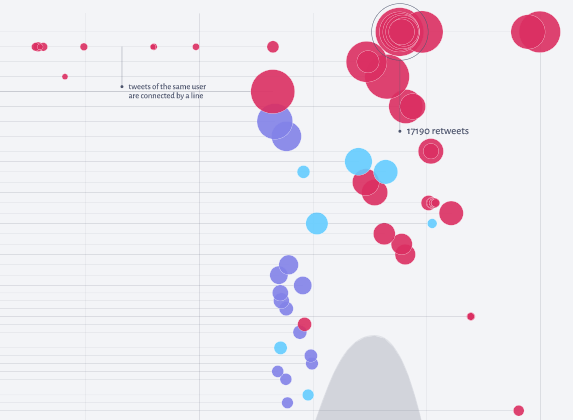
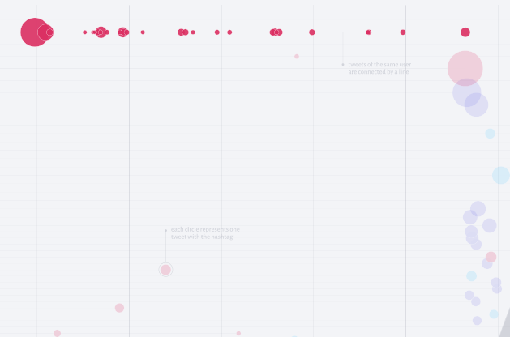
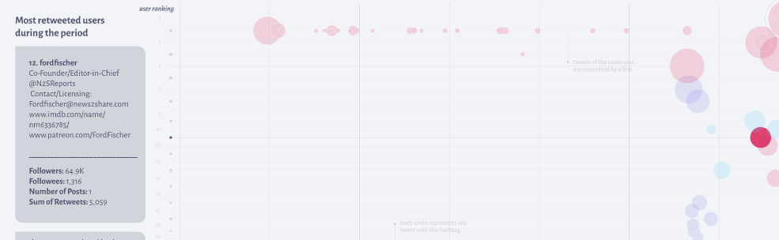
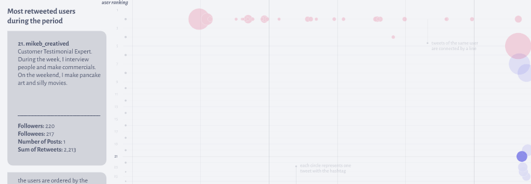

In the week after the US Elections, Trump supporters organized a so-called ‘Million MAGA March’ to manifest against what they believe to be election fraud. They used Twitter to spread information about the event, but it did not take long for the k-pop stan to start using the hashtag to spread pancake pictures. This protocol aims to observe the presence of hijackers and Trump supporters among the most engaged with tweets.
Two days before the march, when the hijacking started, it was already possible to see a few posts unrelated to the march among the most retweeted. On the second day of "pancake tweets”, there was a high number of them among the most engaging, which might suggest they succeeded in deviating attention from tweets inviting people for the march.
The user "@millionmagamarch", who declares his account the official page of the march, had several posts from the first day of use of the hashtag among the most engaging up to the day before the march, when it probably lost space to the hijackers and even anti-Trump accounts.
Different from the days before the march, the day itself and the day after had more people that describe themselves as journalists. That indicates that, even though hijackers cannot be seen on those days, it might be because the posts showing how the event went might have gotten more attention.
It is also interesting to notice that the Trump supporters presented here usually describe their political positions on their bio. The hijackers, on the other hand, generally do not have a clear political statement on their bio and some even have funny descriptions.
